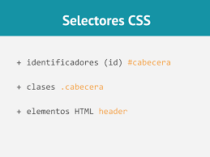

Sintaxis CSS
Se compone de sentencias en las que se establece un atributo de estilo y un valor para el mismo, ambas separadas por el signo de dos puntos.

Tenreiro, X. G. (2017, 10 noviembre). CSS – Sintaxis. WebFerrol. https://www.webferrol.com/css-sintaxis/#:%7E:text=Sintaxis%20CSS,caracter%C3%ADsticas%20propias%20de%20su%20aspecto.
Selectores CSS
Los selectores definen sobre qué elementos se aplicará un conjunto de reglas CSS.

Selectores CSS - CSS | MDN. (2022, 6 marzo). https://Developer.Mozilla.Org. https://developer.mozilla.org/es/docs/Web/CSS/CSS_Selectors
Mockup prototipo de pagina